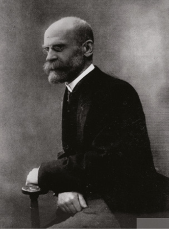
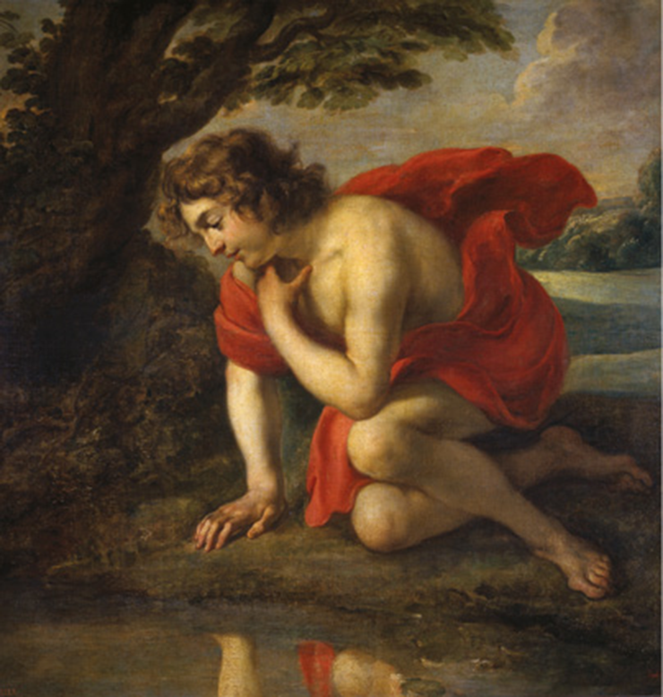
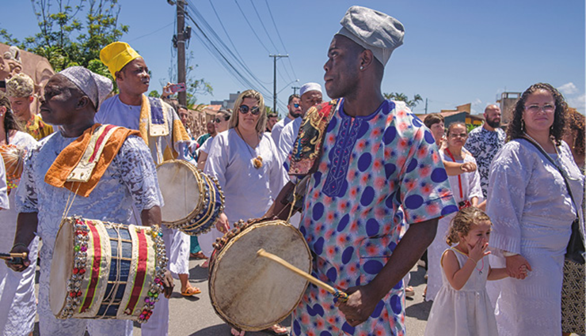
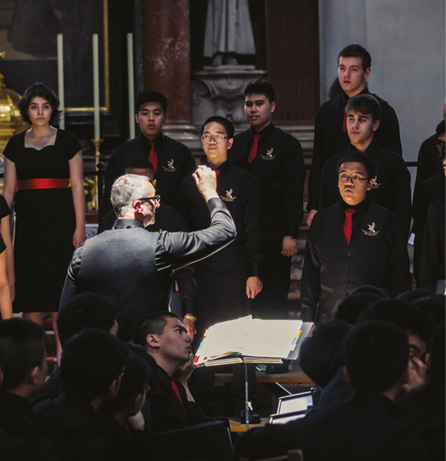
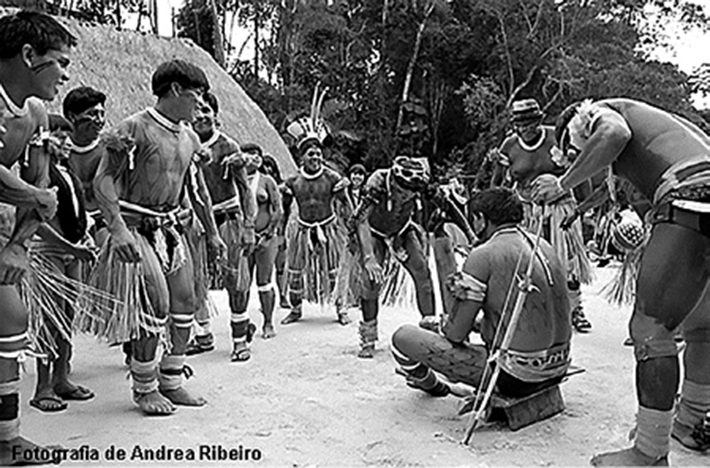

O texto a seguir foi extraído de uma reportagem publicada no jornal El País.
[...] existem pessoas incapazes de ver a realidade, que ficam obcecadas em um ideal do amor que não existe. É a opinião de Soraya Calvo, sexóloga e professora da Universidade de Oviedo, que fala sobre o dano provocado pela propagação da ideia de casal ideal e perfeito. “Desvirtua a vida em casal porque as metas geradas por essa ideia romântica do amor são inalcançáveis e geram muita frustração quando não são atingidas. Além disso, o ideal é algo diferente para cada pessoa e sociedade, de modo que sequer podemos definir o conceito”, diz. [...]
A conclusão é que ter expectativas irreais no amor gera incompreensão e frustração, porque o amor todo-poderoso e absoluto não existe. “É verdade que todos nós podemos ter certas expectativas (o ideal de homem e mulher), mas é preciso pensar e não se deixar levar pelo que se sente, porque as emoções caducam, ou pelo menos caducam tal como as entendíamos no começo da relação. Ao longo da vida em casal, o amor sentido precisa dar lugar ao amor pensado, esse é o ponto”, diz a sexóloga Soraya Calvo. [...]
PALOMO, Verónica. O par perfeito não é a pessoa ideal (se quiser que o amor dur. El País. Madrid, 11 jun. 2019. Disponível em: <https://brasil.elpais.com/brasil/2019/06/10/actualidad/1560169637_262632.html>. Acesso em: 1 ago. 2019.>
Neste capítulo, serão abordadas as habilidades EM13CHS101 e EM13CHS102.
A Sociologia nasce em meio a receios e esperanças diante de mudanças que, como vimos no capítulo anterior, verificavam-se no século XIX. Foi naquele contexto que se desenvolveram teorias como as de Auguste Comte. Outro pensador, porém, ao avaliar as concepções que se formavam e as transformações sociais da Europa daquele tempo, vai se destacar ao propor outras abordagens. Trata-se do sociólogo francês Émile Durkheim (1858-1917), também considerado um dos fundadores da Sociologia.
Émile Durkheim procurou definir, de maneira clara, o método e o objeto de estudo da Sociologia.
Biblioteca de Ciências Humanas e Sociais Paris Descartes-CNRS, Paris, França
Para ele, a Sociologia não seria exatamente uma Física social que partiria em busca de leis gerais, tal como pensava Comte. Também não deve ser confundida com a Psicologia ou a Filosofia, tampouco seria o caso de alçá-la à “ciência por excelência”. Durkheim entende a Sociologia como uma ciência que é autônoma e que se diferencia das demais ciências.
Entretanto, para alcançar esse estatuto, ela precisará ter definidos dois conteúdos básicos: seu objeto científico (objeto de estudo) e seu método. No meio científico, em síntese, objeto é o conteúdo fundamental, foco de uma investigação ou pesquisa; e metodologia é o conjunto de meios aos quais se recorrerá para realizar essa investigação.
Objeto: o fato social
Comecemos pelo objeto científico próprio da Sociologia, como faz Durkheim em As regras do método sociológico, obra de 1895. De acordo com o autor, o objeto sociológico é o que ele chama de fato social. Os fatos sociais constituem os modos de sentir, agir e pensar exteriores aos indivíduos e que exercem força coercitiva sobre estes. Vejamos a seguir o que significa exatamente esse conceito fundamental para a Sociologia de Durkheim.
Coerção, exterioridade e generalidade
Ao seguirmos diversas normas (explícitas ou implícitas) na sociedade em que vivemos e ao agirmos de acordo com o que esperam de nós como cidadãos, filhos, irmãos, alunos, namorados, membros de uma instituição religiosa etc., podemos observar que, mesmo que correspondam ao que desejamos ou à forma como pensamos que as coisas devam ser, essas ações provêm de uma realidade externa, à qual tivemos e temos acesso por meio de nossa formação como pessoas. As maneiras de nos expressar por meio de um idioma, nossas formas de realizar compras com dinheiro e cartões, nossos cumprimentos em diferentes níveis de formalidade ou familiaridade, nosso comportamento em uma cerimônia religiosa, numa conferência na escola e em outras circunstâncias, todos esses exemplos, e muitos outros que poderíamos listar, são, explica Durkheim, fatos sociais.
Seguir regras sociais, como normas de trânsito, é exemplo do que Durkheim define como fato social.
sfe-co2/iStockphoto.com
Essas formas e outras de estarmos em sociedade, como dissemos, representam realidades normativas exteriores a nós enquanto indivíduos. Justamente por serem exteriores, elas apresentam um caráter imperativo, coercitivo sobre os indivíduos. Isso significa que, concordando com elas ou não, gostando delas ou não, elas se impõem. Naturalmente, se nos sentimos confortáveis com elas, mal sentiremos o caráter de imposição. Esse caráter é referido, na teoria durkheimiana, como coerção ou caráter coercitivo dos fatos sociais.
Ações como dormir, alimentar- -se, andar ou gritar ao sentir uma forte dor não são consideradas fatos sociais, uma vez que são inerentes aos seres humanos, portanto não são exteriores nem coercitivas aos indivíduos. A alimentação em si é uma necessidade inerente, ou seja, interna ao ser humano, logo não pode ser considerada por si mesma um fato social. Entretanto, a culinária específica de certo país ou região já é vista como fato social.
Se uma pessoa viola uma norma, pode ser repreendida ou punida. Isso pode acontecer de maneira mais sutil, quando, por exemplo, alguém se atrasa para um compromisso, descumprindo a convenção social da pontualidade, ou, com teor mais grave, no caso de quebra de confiança em assunto muito sério, ou até mesmo na esfera penal legal, quando se trata de crime previsto na legislação.
Durkheim também assinala que a coerção existe mesmo quando é indireta. Por exemplo: ele, como francês, não tinha a obrigação de usar a língua francesa para se comunicar com seus amigos e conhecidos em seu país natal, mas, se não o fizesse, sofreria consequências de não ser compreendido por todos. Outro exemplo: podemos não querer usar mais celulares, mas as pessoas entrarão menos em contato conosco, uma vez que o uso de celular já é fato social, isto é, apresenta-se como geral, exterior e coercitivo, mesmo que os indivíduos não concordem ou não gostem disso.
Uma vez que essas realidades coercitivas são exteriores, independentes da vontade dos indivíduos, dizemos que os fatos sociais também são marcados pela exterioridade, e, como se aplicam às pessoas em geral, a uma sociedade, dizemos que se caracterizam pela generalidade. Esses dois aspectos se juntam, dessa forma, ao da coerção.
Sobre a coerção social e a relação dela com a formação dos indivíduos, comenta Durkheim:
Durkheim relaciona a coerção social à formação do ser humano desde a infância. Quando uma coerção deixa de ser sentida é porque já foi internalizada pelo indivíduo e tornou-se hábito.
Rawpixel/iStockphoto.com
[...] toda educação consiste num esforço contínuo para impor à criança maneiras de ver, de sentir e de agir às quais ela não teria chegado espontaneamente. Desde os primeiros momentos de sua vida, forçamo-las a comer, a beber, a dormir em horários regulares, forçamo-las à limpeza, à calma, à obediência; mais tarde, forçamo-las para que aprendam a levar em conta outrem, a respeitar os costumes, as conveniências, forçamo-las ao trabalho, etc., etc. Se, com o tempo, essa coerção cessa de ser sentida, é que pouco a pouco ela dá origem a hábitos, a tendências internas que a tornam inútil, mas que só a substituem pelo fato de derivarem dela. [...]
DURKHEIM, Émile. As regras do método sociológico. 3. ed. Paulo Neves (Trad.). São Paulo: Martins Fontes, 2007. p. 6.
Normalidade e patologia social
Outra análise durkheimiana considera que os fatos sociais podem ser classificados em normais ou em patológicos. Na categorização de normais, entram todos os fatos que são mais gerais, comuns em uma sociedade, desde situações positivas, como vínculos de amizade, comemorações, trabalhos, idioma, sistema de leis, família, instituições de ensino etc., bem como situações negativas, como homicídios, latrocínios, corrupção, desemprego, entre outros exemplos. Já os demais fatos, que têm teor excepcional, atingem consideráveis dimensões e representam ameaça à sociedade, entram no rol dos patológicos.
Os crimes em geral são categorizados como fatos sociais normais por Durkheim, o que significa que, via de regra, as diferentes sociedades apresentam criminalidades.
LightFieldStudios/iStockphoto.com
Durkheim também compartilha de alguns conceitos teorizados por Comte. Por exemplo, na discussão sobre fatos sociais, ele tece uma observação: o que é normal para uma sociedade não necessariamente o será em outra. Tudo dependerá do que, na terminologia de Durkheim, é possível mencionar como nível de “evolução” ou “desenvolvimento” da sociedade analisada. A antropofagia, por exemplo, era normal em sociedades tribais, como no caso de povos nativos nas Américas do período das Grandes Navegações. Mas é patológica em sociedades como a nossa. Numericamente, o conceito de normalidade passa pela presença do fato analisado dentro da média das sociedades semelhantes, ou seja, de sociedades que estejam em um mesmo nível de complexidade.
Notamos até aqui o diálogo com as ciências biológicas da época. A teoria durkheimiana prossegue nessa associação: o estado de uma sociedade, assim como a de um organismo, é considerado saudável quando manifesta saúde em predominância. Essa última pode coexistir com doenças, mas se mantém desde que tudo se encaixe na ideia de normalidade. Os crimes em geral são categorizados como fatos sociais normais por Durkheim, o que significa que, via de regra, as diferentes sociedades apresentam criminalidades.
Método sociológico
Uma vez definido o objeto da Sociologia, cabe apresentar os meios, as regras que, de acordo com a perspectiva durkheimiana, permitem realizar trabalhos sociológicos científicos.
O primeiro e mais básico meio é considerar os fatos sociais como coisas, e coisa é tudo o que pode ser observado. Com isso, Durkheim espera que os sociólogos, assim como os cientistas, posicionem-se como quem parte do inexplorado, diante de uma nova investigação. Para alcançar isso, os sociólogos devem:
Para Durkheim, o método da Sociologia pode estar baseado nos métodos das ciências naturais, mas não pode ser uma mera cópia deles. Isso porque a Sociologia examina o reino social, que possui particularidades que o distinguem dos fenômenos da natureza.
Além disso, caberá aos sociólogos verificar se os fatos estudados constam dentro da média em sociedades semelhantes e se sua generalidade é constatável na vida coletiva.
No que diz respeito à classificação das sociedades, isso deve levar em conta os níveis ou estágios de complexidade que elas apresentam.
Como síntese desses métodos, podemos chegar à seguinte tabela.
Complexidade significa aqui o grau em que uma sociedade se encontra na escala de organização científica. Isso implicaria uma sociedade arranjada justamente pela ciência social, pautada pela economia industrial, pelo avanço tecnológico e pela orientação moral dada pela própria ciência. Trata-se de um conceito bastante influenciado pela sociologia durkheimiana.
| Principais métodos em Sociologia (Durkheim) |
|---|
| Observação |
| Método comparativo |
| Estatísticas |
| Análise de dados etnográficos |
Durkheim, na esteira das ciências naturais, como vemos, adapta metodologias e terminologias das ciências da natureza. Assentando sua análise na sociedade, e não no indivíduo, o autor define esta regra: devemos buscar a causa de um fato social entre os fatos sociais que o antecederam, e não entre os estados das consciências dos indivíduos.
Falamos em consciências. Mas o que elas representam exatamente na obra de Durkheim? É o que veremos a seguir, juntamente com outras definições do autor.
Divisão social do trabalho
Outra produção de Durkheim que merece destaque é Da divisão do trabalho social, sua tese de doutorado, que veio a público em 1893. A divisão do trabalho diz respeito às atribuições produtivas individuais e coletivas entre os membros de uma sociedade e é um fator fundamental que diferencia os tipos de sociedade (tradicionais e modernas).
Sociedade comparada a um organismo.
Recorrendo a metáforas e comparações biológicas, Durkheim também se refere à divisão social do trabalho associando-a às diferentes funções dos órgãos nos sistemas de um organismo. A divisão contribuiria para a harmonia do corpo.
Para explicá-la, o teórico procurará entender os fatores que viabilizam a coesão social, isto é, a unidade e a estabilidade das relações, no decorrer do tempo, em uma sociedade. O que seria basilar para a existência de uma sociedade? A resposta, à luz da visão do autor francês, está em consensos entre aqueles que formam essa sociedade. Tais consensos se dariam mediante formas de solidariedade social.
Solidariedades sociais
São duas as formas de solidariedade: a mecânica (também chamada de solidariedade por similitudes) e a orgânica. No quadro a seguir, você observa as principais diferenças entre elas.
| Solidariedades sociais | |
|---|---|
| Solidariedade mecânica | Solidariedade orgânica |
| Fruto da divisão social do trabalho mais simples e com menos interdependência entre as pessoas | Fruto da divisão social do trabalho mais complexa e com maior interdependência entre as pessoas |
| Sociedade mais simples | Sociedade mais complexa |
| Indivíduos se conhecem mais entre si | Indivíduos se conhecem menos entre si |
| Os mecanismos coercitivos são mais informais | Os mecanismos coercitivos são mais formais |
| Economia mais simples | Economia mais complexa |
Em cidades pequenas e em áreas predominantemente rurais, local de uma divisão social de trabalho mais simples, encontramos a solidariedade mecânica: suas formas de organização e suas atividades econômicas são mais simples (agricultura e comércio local, por exemplo). Seus membros, em geral, compartilham valores e crenças próximos; muitas normas e expectativas de conduta são baseadas em tradições e visões de mundo locais (questões morais, por exemplo, tendem a ser encaradas como universais). Portanto, o que fundamenta a coesão social nesse tipo de sociedade é a divisão social de trabalho mais simples e o compartilhamento de valores.
Em uma sociedade de solidariedade mecânica, a ajuda entre seus membros pode ser feita de forma voluntária, consciente, justamente porque os valores são comuns.
É importante notar que a complexidade e a simplicidade de uma divisão social do trabalho estão ligadas ao grau de especialização de trabalho em determinada economia. Por exemplo, em geral, em uma sociedade moderna, é preciso muitos especialistas em diferentes áreas para produzir os componentes, produtos, mercadorias e relações. Isso faz com que cada um realize seu próprio tipo de trabalho, que, de tão especializado, não é intercambiável: um médico enquanto tal não tem condições de realizar um trabalho de engenheiro, e vice-versa. Já em uma sociedade mais tradicional, uma vez que a divisão social do trabalho é mais simples, o trabalho é menos especializado e, portanto, mais intercambiável.
Já em grandes cidades, observamos uma solidariedade orgânica: há maior variedade e complexidade na vida econômica, com grande especialização de setores e profissões (indústrias, comércio e serviços, tecnologias etc.), o que leva a uma maior dependência em relação às diferentes áreas e seus produtos e serviços. Por conseguinte, há maior diversidade de valores entre seus membros, que se revelam menos integrados, e, assim, verifica-se aqui um maior individualismo. Como há menor consenso sobre os valores (que tendem a ser encarados como relativos), as expectativas e os conteúdos normativos, em geral, devem vir por meio das leis oficiais. Portanto, a coesão social aqui se assenta, sobretudo, nas normas das legislações (direito) e, ainda, na interdependência própria do trabalho especializado.

Caíque de Abreu/iStockphoto.com
Zonas rurais e centros urbanos são, em geral, exemplos dos diferentes tipos de solidariedade social.
wissanu01/iStockphoto.com
Individualismo e solidariedade orgânica
Pensadores como o filósofo e sociólogo francês Gilles Lipovetsky (1944-) abordam, em vários trabalhos, as relações sociais em face do individualismo na vida contemporânea. Tem se verificado, apontam eles, um enfraquecimento dos sentimentos de pertença e comunidade e dos valores em comum, o que leva muitos a se centrar em si mesmos. Esse tipo de vida mais individualista torna-se possível por conta também do desenvolvimento da tecnologia: pode-se ficar longos períodos sozinho, porque é possível acessar a internet, assistir a séries, jogar videogame, pedir comida por aplicativos etc. Soma-se a isso a crescente supervalorização do consumo, que, em geral, é realizado de maneira pouco crítica. Nesse quadro, uma pessoa tem toda uma variedade de consumo para investir seu tempo e atenção, deixando mais de lado sentimentos de pertencimento comunitário.
Cada geração gosta de se reconhecer e encontrar sua identidade em uma grande figura mitológica ou lendária que ela reinterpreta em função dos problemas do momento [...]. Hoje, é Narciso que, aos olhos de um número relevante de investigadores [...], simboliza o tempo presente [...] [...] A res publica está debilitada, as grandes questões “filosóficas”, econômicas, políticas ou militares provocam mais ou menos a mesma curiosidade desembaraçada que qualquer fait divers [...]. Somente a esfera privada parece sair vitoriosa desse maremoto de apatia; cuidar da própria saúde, preservar a própria situação material, livrar-se de seus “complexos”, esperar pelas férias: viver sem ideal, sem um propósito transcendente se tornou possível. [...]
LIPOVETSKY, Gilles. L’ère du vide: essais sur l’individualisme contemporain. André Luiz de S. Sampaio (Trad.). Paris: Gallimard, 1993. p. 70-2.
Narciso, pintura de Jan Cossiers (1600--1671). Lipovetsky considera uma relação entre o mito narcísico e o individualismo da sociedade contemporânea.
Museu do Prado, Madrid, Espanha
Consciências sociais
Relacionados à coesão social, estão os conceitos durkheimianos de consciência. Podemos definir como consciência coletiva o conjunto de conhecimentos e aspectos comuns de uma sociedade, o qual leva seus membros a pensar e agir de maneira minimamente próxima ou semelhante. Compõe-se de práticas, normas, códigos culturais coletivos, crenças e sentimentos comuns à sociedade, ou seja, coletivos. Ao lado dessa dimensão, há as consciências individuais ou particulares, formadas por crenças e sentimentos pessoais, que tornam únicas as pessoas.
Vale observar que a consciência coletiva resulta dos processos de socialização e se mostra mais forte em sociedades de solidariedade mecânica.
As ações de um indivíduo recebem influências, então, dessas duas formas de consciência. E a consciência coletiva, devemos observar, não depende do indivíduo; na verdade, ela existe antes dele. Nesse contexto, Durkheim explica que a conformação, em grande medida, das consciências individuais à coletiva contribui para a coesão social e, portanto, para o viver em sociedade.
Anomia e sociedade
Em seus estudos, Durkheim introduz o conceito de anomia, tratado nas obras Da divisão do trabalho social, O suicídio (1897) e A educação moral (1902). Do grego anomia, “ausência de normas”, o termo, em Sociologia, indica uma situação social marcada pelo enfraquecimento dos laços sociais e pela perda, por parte da sociedade, de sua capacidade de regulamentar os comportamentos de seus membros. Em uma sociedade anômica, portanto, há uma ruptura na solidariedade.
A perspectiva sociológica de Durkheim é considerada funcionalista. A corrente do funcionalismo entende que cada parte que compõe a sociedade, com suas funções e particularidades, tem relação fundamental com a ideia de sociedade como um todo, com sua coesão etc. Esse método fica claro quando estudamos a sociedade como um todo a partir da relação entre suas partes, tal como a divisão social do trabalho, os tipos de solidariedade e a coesão social.
A divisão social do trabalho, no modelo das sociedades complexas – como é o caso de sociedades do pós-Revolução Industrial, analisadas por Durkheim –, leva, como vimos, a diferenciações entre seus integrantes e dá lugar à solidariedade orgânica. Ou seja, há uma ruptura com a solidariedade mecânica das sociedades mais simples.
Para Durkheim, os meios coercitivos, como as normas jurídicas, não são suficientes para assegurar a estabilidade de uma sociedade: é essencial a
noipornpan/iStockphoto.com
As normas oficiais seriam suficientes para fazer de um conjunto de indivíduos uma sociedade? Os consensos entre as pessoas poderiam sobreviver somente por meio de coerção e uso da força das leis? Para essas duas indagações, a resposta da teoria durkheimiana é não. É imprescindível a união por meio dos laços de solidariedade, aspecto que caracteriza os seres humanos fora de seu estado de natureza.
É importante levarmos em conta esse contexto para compreendermos a anomia. Em sociedades industriais, por vezes, há regras sem unidade, nem todas as relações sociais são regulamentadas e os vínculos entre as pessoas são mais frágeis. Isso tudo contribui para riscos de estados anômicos. Por isso, podemos dizer que a anomia é mais característica de sociedades industriais modernas.
Observa Durkheim:
[...] se a divisão do trabalho produz a solidariedade, não é apenas porque ela faz de cada indivíduo um “trocador”, como dizem os economistas; é que ela cria entre os homens todo um sistema de direitos e deveres que os ligam uns aos outros de maneira duradoura. Do mesmo modo que as similitudes sociais dão origem a um direito e a uma moral que as protegem, a divisão do trabalho dá origem a regras que asseguram o concurso pacífico e regular das funções divididas. [...]
DURKHEIM, Émile. Da divisão do trabalho social. 2. ed. Eduardo Brandão (Trad.). São Paulo: Martins Fontes, 1999. p. 429.
A anomia consiste justamente em quebra na solidariedade social e em desrespeito a normas e práticas coletivas. Como exemplo, pensemos em empresários que costumavam respeitar as legislações e, posteriormente, passam a fraudar o mercado e a usar de artifícios irregulares para prejudicar os concorrentes. Ocorre, nesse caso, uma anomia – deixam-se de lado regras e solidariedade social. Outros exemplos são situações de generalização de crimes violentos, corrupções, suicídios etc.
Suicídio à luz da Sociologia
Mencionamos há pouco a obra O suicídio. Nesse trabalho, Durkheim explora o tema, naturalmente, sob a ótica da Sociologia. Poderíamos nos perguntar: de que maneira o suicídio interessa ao sociólogo? Considerando que se trata de um ato de um indivíduo que afeta a si próprio, não parece, ao menos a princípio, que esse fenômeno depende tão somente de fatores individuais? Se assim for, seria essa uma questão mais própria do campo da Psicologia. Aliás, frequentemente as pessoas buscam explicar o suicídio com base em questões da mente ou em antecedentes da história pessoal.
Olhares sobre a nossa sociedade
Com seus colegas e seu professor, à luz da teorização de Émile Durkheim, procure detectar situações, em diferentes esferas do Brasil atual, que caracterizariam patologias ou anomias sociais. De que maneira essas situações se associam à ideia de solidariedade? Quais os impactos delas no conjunto da sociedade brasileira? Que percursos são necessários para superá-las?
No entanto, defende Durkheim, se, em vez de olhar para os suicídios apenas como acontecimentos particulares, considerarmos o conjunto de suicídios ocorridos em determinada sociedade, em dado período, iremos constatar que não se trata simplesmente da soma de fatos independentes: há um fato de natureza social. Nesse sentido, o autor fez pesquisas e apresenta dados, informando, para uma mesma sociedade, numa observação de determinado período de tempo, a taxa de suicídios (razão total entre o número de suicídios e a população geral). Os dados levantados são cruzados com variáveis, como idade, sexo, estado civil, país de residência e pertencimento religioso.
Na introdução de seu trabalho, Durkheim indica que se deve, primeiramente, definir os fatos que pretendemos estudar sob o nome de suicídios. Há, na linguagem usual, falhas quanto à classificação dos suicídios, aponta o sociólogo.
Diríamos que só há suicídio quando o ato que resulta na morte é realizado pela vítima tendo em vista esse resultado? Comete suicídio verdadeiramente apenas quem quer se matar? O suicídio é, em outras palavras, um homicídio intencional de si mesmo? Como saber com certeza o que levou ao ato? E como saber se, quando a pessoa tomou sua decisão, era a própria morte que ela tinha em vista, e não outro objetivo? Não podemos apreender de fora a intenção, pois se trata de algo da esfera íntima. Poderíamos até tentar, mas no máximo nos aproximaríamos da resposta, apenas.
Um soldado que corre ao encontro da morte certa para salvar seu regimento não é alguém que quer morrer. Porém, não é ele autor de sua morte da mesma forma que um empresário que se mata para fugir às consequências da falência? As diferentes maneiras de renunciar à própria existência podem levar, então, a dúvidas sobre sua definição.
O teórico francês tece, por fim, sua conceituação: “[...] Chama-se suicídio todo caso de morte que resulta direta ou indiretamente de um ato, positivo ou negativo, realizado pela própria vítima e que ela sabia que produziria esse resultado. A tentativa é o ato assim definido mas interrompido antes que dele resulte a morte. [...]” (DURKHEIM, Émile. O suicídio. STAHEL, Monica (Trad.). São Paulo: Martins Fontes, 1999. p. 14).
Durkheim classifica o suicídio nos seguintes tipos:

Ações de terroristas, como no 11 de setembro de 2001, em Nova York, incluem-se entre os suicídios chamados altruístas.
Dan Howell/Shutterstock.com
O suicídio fatalista é decorrente do excesso de regulação pela sociedade e do excesso da regulação moral, da anulação dos desejos e das expectativas individuais por uma ordem disciplinar opressora. Surge como única escapatória possível a um contexto normativo imposto e inapelável. Exemplos: um escravo que não encontra possibilidades sociais de libertação; ausência de divórcio, que não deixa a possibilidade de escapar ao fraco conjugal.
Um livro religioso é sagrado, porque não é apenas livro (o que vemos com os nossos sentidos), mas porque contém algo a mais (transcendent, que não conseguimos ver com os sentidos. Nos exemplos anteriores, um livro de orações não é simplesmente um livro, uma percussão em um ritual não é simplesmente uma percussão, um rio tido como sagrado não é visto apenas como rio, e o cantar de músicas sacras tem um significado que vai além da execução vocal. No entanto, as coisas tidas como profanas são somente aquilo que nossos sentidos podem captar: uma mesa é só uma mesa, um prédio comercial é só um prédio, uma apresentação musical é só uma apresentação etc.
Religião: o sagrado e o profano
Durkheim trata da religião em As formas elementares da vida religiosa, produção de 1912. O autor considera duas dimensões das vivências humanas. Uma é o sagrado: tudo aquilo que é caracterizado como sobrenatural, espiritual, extrafísico, isto é, tudo aquilo que é dotado de uma característica que está além da capacidade de captação de nossos sentidos: espaços reservados a cerimônias religiosas, músicas sacras, livros, pessoas incumbidas de ofícios religiosos, estátuas, vestimentas e objetos cerimoniais etc. A outra dimensão é o profano, isto é, tudo o que se entende como não sagrado, não imbuído de sentido ou valor transcendental, e sim de sentido natural, captável simplesmente por nossos sentidos.

RnDmS/iStockphoto.com
FernandoPodolski/iStockphoto.com
kurkul/iStock.com
As mais diversas religiões apresentam inúmeras práticas relacionadas à ideia de sagrado.
DaveLongMedia/iStockphoto.com
Na obra de Durkheim, podemos encontrar também as instituições religiosas designadas pelo termo Igreja. Nesses casos, a referência é às religiões em geral, e não a uma instituição em particular.
Fazer a leitura de um livro, tocar instrumentos musicais, banhar-se e cantar são ações que, em contextos comuns, podemos classificar como profanas. Mas todas elas ficam dotadas de sentido sagrado quando em contextos religiosos. Nas imagens a seguir, vemos um sacerdote ortodoxo lendo uma oração (1), membros do candomblé tocando tambores em um festejo (2), hindus banhando-se em um rio considerado sagrado (3), e católicos cantando em uma celebração (4).
Composta de crenças, rituais e experiências, a religião, diz Émile Durkheim, é a instituição social que estabelece a diferença entre as dimensões do sagrado e do profano. Jamais podendo ser separada de seu contexto social, ela contribui para a coesão social, proporciona sentimentos de unidade e tem grande relevância na consciência coletiva.
Durkheim observa que a sociedade também “consagra” coisas, como é o caso da sacralização de ideias. Sendo elas compartilhadas pela maioria de uma população, passa-se a proibir criticá-las ou contestá-las. Elas se tornam intocáveis (o que corresponde à acepção de “sagradas”).
1
Ao morar em uma cidade pequena do Texas, algumas coisas estão garantidas: alguém por perto vai ter galinhas [...]; todos vão saber da sua vida [...]; mas, vendo pelo lado positivo, numa cidade pequena do Texas, as pessoas cuidam umas das outras. [...]
Uma proposta e uma cruz de palito de picolé (Temporada 2, episódio 20). O Jovem Sheldon [Seriado]. Direção: Jaffar Mahmood. Produção: Chuck Lorre et al. Estados Unidos: Chuck Lorre Productions e Warner Bros. Television, 2018.
O texto lido é o início da narração do 20º episódio da 2ª temporada de Young Sheldon, série que apresenta a infância do cientista americano Sheldon Cooper, personagem original da ficção The Big Bang Theory (CBS). A história do garoto Sheldon se passa em sua cidade natal, Galveston, no leste do Texas (EUA).
Sheldon (Iain Armitag e sua mãe, Mary Cooper (Zoe Perry), em Young Sheldon (classificação indicativa: 12 anos).
Pictorial Press Ltd/Alamy/Fotoarena
- Considerando a análise durkheimiana sobre a divisão social do trabalho, qual é a forma de solidariedade social vivida na cidade e no contexto retratados no texto?
- Em síntese, explique esse conceito e diferencie-o da outra forma de solidariedade definida por Durkheim.
2
Leia o texto a seguir.
A visão de Taylor, a de Ford e, depois, a de Elton Mayo revelam a influência das formulações de Durkheim sobre a consciência coletiva. Durkheim afirmou que há uma consciência coletiva que define as ações individuais, submetendo todos à norma, à regra, à disciplina, à moral e à ordem estabelecidas. As empresas devem dar continuidade a isso, definindo claramente o lugar e as atividades de cada um, para que não haja dúvida sobre o que cada membro deve fazer. Se houver conflito, diz ele, deve ser minimizado através de uma coesão social, baseada na ideia de consenso, orientada pela existência de uma consciência coletiva que paira acima dos indivíduos na sociedade. [...]
TOMAZI, Nelson Dacio. Sociologia para o ensino médio. 2. ed. São Paulo: Saraiva, 2010. p. 51.
- Os engenheiros Frederick Taylor (1856-1915) e Henry Ford (1863-1947) e o sociólogo e psicólogo Elton Mayo (1880-1949), em linhas próprias de estudo, trataram de questões relativas ao trabalho em empresas e fábricas, no contexto industrial. Conforme o texto, a relação deles com o pensamento de Durkheim reside na consideração da chamada consciência coletiva. Defina esse conceito e diferencie-o do de consciência particular.
- Muitas empresas, hoje, preconizam uma cultura corporativa, que inclui conteúdos como missão e valores que devem reger as relações de trabalho. De acordo com Durkheim, quais podem ser os objetivos disso?
- De acordo com o texto, como o mundo empresarial e os conceitos de coesão social e consciência coletiva se associam?
- Que relações podemos estabelecer entre os aspectos do fato social durkheimiano e a esfera empresarial de que trata o texto? Explique.
3
A notícia que reproduzimos parcialmente a seguir foi publicada no portal da Agência Brasil, em abril de 2019.
Alto nível educacional, membros de famílias abastadas de classe média ou média alta e, consequentemente, com recursos financeiros próprios – este é o perfil dos nove terroristas suicidas que executaram os atentados no Domingo de Páscoa em hotéis de luxo e três igrejas católicas do Sri Lanka, que deixaram pelo menos 359 mortos e mais de 500 feridos.
Com o andamento das investigações, começaram a surgir detalhes sobre os terroristas. A reivindicação da organização Estado Islâmico (EI) pela responsabilidade dos atentados é levada a sério pelos investigadores. [...]
Terroristas do Sri Lanka são de família rica. Agência Brasil. Brasília, 25 abr. 2019. Disponível em: <http://agenciabrasil.ebc.com.br/ internacional/noticia/2019-04/terroristas-do-sri-lanka-sao-de- familia-rica-e-boa-educacao>. Acesso em: 1 ago. 2019.
- Durkheim apresenta três tipos de suicídio, em suas ponderações sociológicas sobre o tema. Qual deles se aplica ao caso reportado na matéria jornalística? Por quê?
- Explique os outros dois tipos de suicídio.
4
Veja esta outra matéria.
O Santuário Nacional de Nossa Senhora Aparecida, no município de Aparecida (SP), recebe hoje (12), feriado dedicado à santa, milhares de romeiros e fiéis. Com o tema Em Jesus, com Maria, Restauramos a Vida, este ano, a Basílica comemora 40 anos da restauração da imagem da padroeira, após ter se quebrado num atentado em 1978. [...]
CRUZ, Fernanda. Festa da Padroeira do Brasil movimenta Santuário de Aparecida. Agência Brasil. São Paulo, 12 out. 2018. Disponível em: <Festa da Padroeira do Brasil movimenta Santuário de Aparecida>. Acesso em: 1 ago. 2019.
Sacerdote católico conduz imagem de Nossa Senhora Aparecida, em cerimônia no Santuário de Aparecida (SP).
Rovena Rosa/Agência Brasil
- Como podemos definir as dimensões do sagrado e do profano, de acordo com a proposta de Durkheim?
- Que elementos na foto reproduzida retratam a ideia de sagrado, transcendental? Qual o significado deles?
- Cite exemplos de outros elementos de alguma religião, ou de diferentes religiões, que ilustram o conceito de coisa sagrada.
- De acordo com a teoria durkheimiana, como as religiões se relacionam com a expressão da consciência coletiva?
1
UEG-GO 2016 O objeto de estudo da sociologia, para Durkheim, é o fato social, que deve ser tratado como “coisa” e o sociólogo deve afastar suas prenoções e preconceitos. A construção durkheimiana do objeto de estudo da sociologia pode ser considerada
- positivista, pois se fundamenta na busca de objetividade e neutralidade.
- dialética, pois reconhece a existência de uma realidade exterior ao pesquisador.
- kantiana, pois trata da “coisa em si” e realiza a coisificação da realidade.
- nietzschiana, pois coloca a “vontade de poder” como fundamento para a pesquisa.
- weberiana, pois aborda a ação social racional atribuída por um sujeito.
2
UEM-PR 2016 [...] Durkheim observa a coesão social, ou seja, o grau de integração de cada sociedade. Em sociedades que desenvolveram muito a divisão do trabalho predomina uma dinâmica dupla. Ao mesmo tempo em que ocorre uma diferenciação profissional, cria-se uma interdependência funcional entre os indivíduos.
MACHADO, I. J. de R. et al. Sociologia hoje. São Paulo: Ática, 2013. p. 122.
Considerando o trecho citado e conhecimentos sobre as perspectivas teórica e metodológica em Durkheim, assinale o que for correto.
- 01. A teoria de Durkheim destaca a regularidade e a funcionalidade dos fatos sociais.
- 02. Émile Durkheim estudou profundamente o suicídio e associou suas taxas de ocorrência aos graus de solidariedade social de diferentes grupos.
- 04. As relações entre classes sociais e processos de dominação na sociedade industrial são temas centrais na sociologia de Durkheim.
- 08. O método sociológico proposto por Durkheim pode ser aplicado ao estudo dos mais diversos fenômenos coletivos, tais como a moda, a religião e a educação.
- 16. O desenvolvimento de uma consciência individual e o problema da tomada de decisão subjetiva orientada por finalidades afetivas ou racionais são elementos que integram as teses sociológicas da análise de Durkheim.
- Soma:
3
UEM/PAS-PR 2017 Émile Durkheim (1858-1917) é considerado, conjuntamente com Auguste Comte (1798-1857), Karl Marx (1818-1883) e Max Weber (1864--1920), um dos fundadores da Sociologia. Em 1895, Durkheim publicou As regras do método sociológico, onde apresenta o conceito de fato social. Esse conceito é central na sociologia durkheimiana.
Sobre o fato social é correto afirmar:
- 01. Émile Durkheim afirma em As regras do método sociológico que o fato social é exterior às pessoas.
- 02. O fato social, segundo Émile Durkheim, possui uma existência própria, para além das manifestações individuais.
- 04. Em As regras do método sociológico, Émile Durkheim propõe que o fato social é geral, ocorrendo no conjunto de uma sociedade.
- 08. Para Émile Durkheim, o fato social é particular e individual.
- 16. Uma das características definidoras do fato social, segundo Émile Durkheim, é a sua capacidade de coerção sobre as pessoas.
- Soma:
4
UEM-PR 2016 Durkheim concebe a sociedade como um corpo vivo, um organismo cujas partes – cada instituição e cada indivíduo – cumprem papéis determinados e existem em função do todo. A ‘liga’ que une esses diferentes componentes, tornando a sociedade possível, é o que ele chama de solidariedade. Nas sociedades mais simples e mais homogêneas há uma integração equilibrada entre as partes porque elas diferem muito pouco entre si [...]. Esse tipo de arranjo social, característico das sociedades pré-capitalistas, sofreu uma mudança importante quando, paralelamente ao aumento populacional, ocorreu um incremento das comunicações e das trocas de mercadorias e ideias entre as pessoas [...].
BOMENY, Helena et al. Tempos modernos, tempos de sociologia. São Paulo: Editora do Brasil, 2013. p. 77-8.
Considerando o texto e conhecimentos sobre o tema citado, assinale o que for correto.
- 01. Durkheim se preocupa com o tema da divisão do trabalho social, processo presente em todas as sociedades humanas.
- 02. A noção de integração é central no pensamento de Durkheim. Ela se faz presente no ambiente de trabalho, nas relações familiares ou no próprio Estado.
- 04. Para Durkheim, a vida social não gera uma vida moral. Esta seria expressão de fenômenos puramente psicológicos; portanto, não seria objeto de estudos da sociologia.
- 08. Durkheim define que os agrupamentos humanos, independentemente de sua variedade populacional, cultural ou social, são regidos por semelhantes formas de solidariedade.
- 16. Os processos educativos estão ausentes do pensamento de Durkheim. Para ele, os modos de aprendizagem são uma extensão da vida biológica.
- Soma:
5
UPE/SSA 2017 Leia o texto a seguir:
O saber da comunidade, aquilo que todos conhecem de algum modo; o saber próprio dos homens e das mulheres, de crianças, adolescentes, jovens, adultos e velhos; o saber de guerreiros e esposas; o saber que faz o artesão, o sacerdote, o feiticeiro, o navegador e outros tantos especialistas, envolve, portanto, situações pedagógicas interpessoais, familiares e comunitárias, em que ainda não surgiram técnicas pedagógicas escolares, acompanhadas de seus profissionais de aplicação exclusiva.
BRANDÃO, Carlos Rodrigues. O que é Educação? São Paulo: Brasiliense, 2007. p. 20.
O tema discutido no texto é uma preocupação nos estudos da Sociologia desde a sua consolidação como ciência. Nos trabalhos de Émile Durkheim, esse tema ganhou um destaque por considerar uma forma de integração dos indivíduos e de perpetuação dos hábitos e costumes do grupo, ou seja, dos fatos sociais.
Sobre isso, assinale a alternativa que NÃO indica uma característica do tipo de transmissão do conhecimento.
- A aprendizagem acontece sem que haja um planejamento específico e, muitas vezes, sem que os sujeitos se deem conta.
- O processo de construção do conhecimento é permanente, contínuo e não previamente organizado, desenvolvendo-se ao longo da vida.
- O conhecimento transmitido permite ao sujeito resolver situações referentes aos processos de socialização e àqueles relacionados às imposições da natureza para sobrevivência do grupo.
- A percepção gestual, a moral e a comportamental, provenientes de meios familiares de amizade, de trabalho e de socialização midiática, fazem parte do rol de aprendizagens e conhecimentos.
- O conhecimento e a habilidade são transmitidos por meio de um currículo pré-definido em ambientes especializados, num processo conhecido como escolarização.
6
Unioeste-PR 2015 “Solidariedade orgânica” e “solidariedade mecânica” são conceitos propostos pelo sociólogo francês Émile Durkheim (1858-1917) para explicar a “coesão social” em diferentes tipos de sociedade. De acordo com as teses desse estudioso, nas sociedades ocidentais modernas, prevalece a “solidariedade orgânica”, onde os indivíduos se percebem diferentes embora dependentes uns dos outros. A lógica do mercado capitalista, entretanto, baseada na competição individualista em busca do lucro, pode corromper os vínculos de solidariedade que asseguram a coesão social e conduzir a uma situação de “anomia”. De acordo com os postulados de Durkheim, é CORRETO dizer que o conceito de “anomia” indica
- a necessidade de todos demonstrarem solidariedade com os mais necessitados.
- uma situação na qual aqueles indivíduos portadores de um senso moral superior devem se colocar como líderes dos grupos dos quais fazem parte.
- a condição na qual os indivíduos não se identificam como membros de um grupo que compartilha as mesmas regras e normas e têm dificuldades para distinguir, por exemplo, o certo do errado e o justo do injusto.
- o consumismo exacerbado das novas gerações, representado pelo aumento do número de shopping centers nas cidades.
- a solidariedade que as pessoas demonstram quando entoam cantos nacionalistas e patrióticos em manifestações públicas como os jogos das seleções nacionais de futebol.
7
UEL-PR
Sentir-se muito angustiado com a ideia de perder seu celular ou de ser incapaz de ficar sem ele por mais de um dia é a origem da chamada “nomofobia”, contração de no mobile phobia, doença que afeta principalmente os viciados em redes sociais que não suportam ficar desconectados. Uma parte da população acha que, se não estiver conectada, perde alguma coisa. E se perdemos alguma coisa, ou se não podemos responder imediatamente, desenvolvemos formas de ansiedade ou nervosismo.
O MEDO de não ter o celular à disposição cria nova fobia. Exame, 9 abr. 2012. Disponível em: <https://exame.abril.com.br/estilo-de-vida/o-medo-de-nao-ter-o-celular-a-disposicao-cria-nova-fobia/>. Acesso em: 9 abr. 2012. (Adapt.).
Com base no texto e nos conhecimentos sobre socialização e instituições sociais, na perspectiva funcionalista de Durkheim, assinale a alternativa correta.
- A nomofobia reduz a possibilidade de anomia social na medida em que aproxima o contato em tempo real dos indivíduos, fortalecendo a integração com a vida social.
- As interações sociais via tecnologias digitais são uma forma de solidariedade mecânica, pois os indivíduos uniformizam seus comportamentos.
- O que faz de uma rede social virtual uma instituição é o fato de exercer um poder coercitivo e ao mesmo tempo desejável sobre os indivíduos.
- O uso de interações sociais por recursos tecnológicos constitui um elemento moral a ser compreendido como fato social.
- Para a nomofobia ser considerada um fato social, faz-se necessário que esteja presente em uma diversidade de grupos sociais.
8
(Ufu 2016) A Sociologia surge no século XIX, momento marcado por uma intensa crise social na Europa. Émile Durkheim não deixou de ser influenciado por esse contexto. Nesse sentido, um dos seus objetivos era fazer da Sociologia uma disciplina científica capaz de criar respostas aos desafios enfrentados pela sociedade moderna. Entre os desafios, colocava-se a crescente contradição entre capital e trabalho, entendida pelo autor como um exemplo dos efeitos de um estado de anomia, caracterizado
- pela excessiva regulamentação estatal sobre as atividades econômicas.
- pela intensificação dos laços de solidariedade mecânica no interior das corporações.
- pela ausência de instituições capazes de exercerem um poder moral sobre os indivíduos.
- pelo aprofundamento da desigualdade econômica.
9
O sociólogo francês Émile Durkheim entende a sociedade como algo maior do que apenas um povo que vive sob a mesma localização geográfica. Segundo ele, na formação da sociedade ou de um determinado grupo de indivíduos, são levados em consideração valores morais, crenças, hábitos, normas e doutrinas em comum, fazendo com que os fatos ocorridos nesse espaço tenham papel fundamental na organização e formação desse ambiente. Assim, Durkheim defende a tese de que esses fatos sociais possuem três características próprias que auxiliam na construção de uma identidade e consciência de grupo, servindo também para que as ações individuais não causem desarmonia no corpo social (no caso da charge, o ressurgimento de doenças consideradas erradicadas).
De acordo com a charge, o texto e seus conhecimentos acerca dos pressupostos teóricos do sociólogo Émile Durkheim, é correto afirmar que um fato social tem como características:
- coletividade, generalidade e discricionariedade.
- exterioridade, generalidade e coercitividade.
- subjetividade, homogeneidade e conservadorismo.
- exterioridade, ceticismo e discricionariedade.
- coletividade, ceticismo e coercitividade.
10
Uece 2020 Na Sociologia proposta por Émile Durkheim (1858-1917), uma sociedade não é simplesmente uma soma de indivíduos, mas uma realidade que supera ou é maior que cada um de seus membros tomados de maneira isolada. Uma sociedade é, assim, uma realidade que se impõe a qualquer um de seus indivíduos. E para comprovar tal compreensão, Durkheim desenvolveu o conceito de Fato Social que aborda, na perspectiva dele, a maneira como ocorre essa força do social sobre os seres humanos em sociedade, além de ser o objeto de estudo principal, para ele, da ciência sociológica. Assim, considerando a perspectiva sociológica durkheimiana, é correto dizer que
- os Fatos Sociais demonstram as necessidades e funcionalidades que estão em constante conflito entre si.
- os indivíduos, em conjunto, podem exercer uma força contrária decisiva na reorganização de sua sociedade
- os Fatos Sociais são certas maneiras de agir, pensar e sentir que possuem força coercitiva sobre os indivíduos.
- a realidade individual entra em contradição com a realidade do social, que é geral na extensão de toda sociedade.
Superação
UEL-PR 2018 No Brasil, entre abril e maio de 2017, uma espécie de jogo conhecido como “Baleia Azul” causou alvoroço nas redes sociais digitais. Trata-se de uma série de desafios que culmina no suicídio do “jogador”, geralmente um indivíduo jovem. As reações, principalmente das famílias e das escolas, alertavam para a necessidade de reforçar os laços sociais e as regras de convívio coletivo. Também se disseminaram opiniões sobre a necessidade de os jovens concentrarem-se nos estudos e no trabalho como forma de manutenção do equilíbrio social. Mas o assunto não é novo em Sociologia. Os aspectos sociológicos do suicídio foram analisados por um autor clássico, Émile Durkheim, que, em 1897, publicou a obra O Suicídio: estudo de sociologia. Com base na teoria de Durkheim, caracterize o “suicídio anômico” como um tipo de suicídio específico das sociedades modernas.